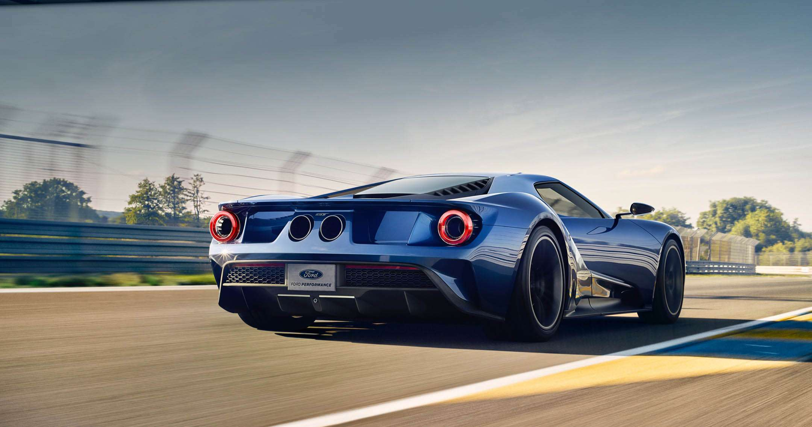

There´s a Monter

The Ford GT40 was a purpose-built car that was designed to put Enzo Ferrari in his place at Le Mans, and it did just that. Unfortunately, it was only produced for two years before being discontinued but, for 2017, Ford is debuting the second generation that will be known as the Ford GT . On the outside, there are plenty of hints that point back to the GT40, like the overhang at the front fascia and the air intakes behind the rear doors, but otherwise, the car is sleeker and looks much more modern and supercar-ish. Inside, the car is built for control and usability. The seats are integrated into the shell to give the drive a better overall feel, and the car features an adjustable steering wheel and pedals. There are two display screens and soft touch surfaces here and there. While it was expected to use a turbocharged version of the flat-plane crank V-8 from the GT350 Mustang , Ford decided to go with a 3.5-liter EcoBoost unit with twin turbochargers. No specifics have been provided as of yet, but it should deliver at least 600 horses.
There´s a Monter
The best news so far is the fact that Ford decided to skip going with an all-wheel-drive setup, and instead decided to stick with the traditional rear-wheel-drive orientation, making the new Ford GT a true driver’s car. All told, the new Ford GT is hands down, the best supercar to ever be developed in the history of the blue oval brand. With a legendary history behind it and modern materials throughout, the Ford GT is sure to recreate and surpass the Ford GT40’s success.
The new Ford GT has a design that instantly recognizable when viewed with its older siblings. The mid-engine design lends itself to a long wedge shape, and the car has the signature sloped GT nose with the dual ducts in the front that create a menacing and memorable look. The rear of the car looks far more modern than past GTs, with round hips, crisp cuts near the taillights reminiscent of modern Ferrari Ferrari s, and set of flying buttress wings for extra downforce. There is also a huge set of canon exhaust outlets mounted high-center and the lower part features an aggressive rear diffuser.
The greenhouse is less open and wide than previous cars, making for a more aerodynamic design that tapers inward toward the top. Compared to old cars, the new model is much more sleek, and looks less like a fast wedge carved from a brick.
There are still lots of subtle details that harken back to the old models like the outboard circular taillamps. This new and exciting shape is made from carbon fiber to help reduce overall weight. To make sure the car is as fast as possible while maintain stability, each and every curve you see has been fine-tuned for a specific purpose. The windshield is sloped and rounded to cut drag while improving visibility, and the rear spoiler will actively adjust based on conditions.
With such a different shape, Ford had to give the GT elegant upward-swinging doors to make it easier to enter and exit the cockpit.